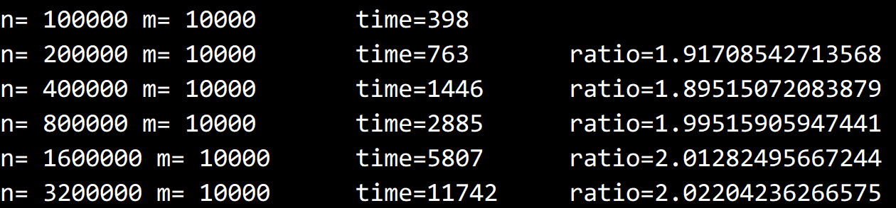

© 2019 《算法（第四版）》C# 题解 | Provided By 沈星繁
搜索解答
目前已完成到 2.5
2.4.28
上次更新：2019-02-13
发现了题解错误/代码缺陷/排版问题？请点这里：如何：提交反馈 。
题目
2.4.28
选择过滤。
编写一个 TopM 的用例，从标准输入读入坐标 (x, y, z)，
从命令行得到值 M，然后打印出距离原点的欧几里得距离最小的 M 个点。
在 N=10^8 且 M=10^4 时，预计程序的运行时间。
解答
开始时让 N=10^5，在 M=10^4 不变的情况下令 N 不断翻倍，求出算法增长的数量级。
再根据求出的增长的数量级估计 N=10^8 时所需要的时间。
为了方便比较，需要编写一个欧几里得距离类，
构造时输入一个点的坐标，内部自动计算并保存这个点到原点的欧几里得距离。
欧几里得距离的计算公式如下：
$$
d(x,y)=\sqrt{\sum_{i=1}^{n}(x_i-y_i)^2}
$$
其中，x 和 y 分别代表两个点。
在本题中，y 始终是原点，且使用三维坐标系，因此公式可以简化为：
$$
d=\sqrt {x^2+y^2+z^2}
$$
同时这个类需要实现 IComparable 接口以作为最小堆的元素。
做测试时，先随机生成 N 个点，再建立一个最小堆。
随后开始计时，把开始的 m 个点插入。
剩余的 n-m 个点则是先删除最小值再插入，这样可以保证最小堆的大小不变。
最后再把堆中的所有元素输出，停止计时。
用不断倍增的的 N 值做上述测试，获得每次的耗时，进而求得算法增长的数量级。
求得的结果如下：

可以推出当 N=10^8 时耗时为 $ 398 ms × 1000 = 398 s $
代码
欧几里得距离类，EuclideanDistance3D
using System;
namespace _2._4._28
{
/// <summary>
/// 点到原点的欧几里得距离。
/// </summary>
class EuclideanDistance3D : IComparable<EuclideanDistance3D>
{
private readonly int x, y, z;
private double distance;
/// <summary>
/// 计算点到原点的欧几里得距离。
/// </summary>
/// <param name="x">x 轴坐标。</param>
/// <param name="y">y 轴坐标。</param>
/// <param name="z">z 轴坐标。</param>
public EuclideanDistance3D(int x, int y, int z)
{
this.x = x;
this.y = y;
this.z = z;
this.distance = Math.Sqrt(x * x + y * y + z * z);
}
/// <summary>
/// 比较两个欧几里得距离的大小。
/// </summary>
/// <param name="other">另一个欧几里得距离。</param>
/// <returns></returns>
public int CompareTo(EuclideanDistance3D other)
{
return this.distance.CompareTo(other.distance);
}
/// <summary>
/// 以 "(x, y, z)" 形式输出点的坐标。
/// </summary>
/// <returns></returns>
public override string ToString()
{
return "(" + this.x + ", " + this.y + ", " + this.z + ")";
}
}
}
测试类
using System;
using System.Diagnostics;
using PriorityQueue;
namespace _2._4._28
{
/*
* 2.4.28
*
* 选择过滤。
* 编写一个 TopM 的用例，
* 从标准输入读入坐标 (x, y, z)，从命令行得到值 M，
* 然后打印出距离原点的欧几里得距离最小的 M 个点。
* 在 N=10^8 且 M=10^4 时，预计程序的运行时间。
*
*/
class Program
{
static void Main(string[] args)
{
// m 不变的情况下算法是 O(n) 的
// 因此预计时间是 n=10^5 的运行时间乘以 10^3 倍。
int n = 100000, m = 10000;
long prev = 0;
for (int i = 0; i < 6; i++)
{
Console.Write("n= " + n + " m= " + m);
long now = test(m, n); // 获取当前 m,n 值的算法运行时间
Console.Write("\t time=" + now);
if (prev == 0)
{
prev = now;
Console.WriteLine();
}
else
{
Console.WriteLine("\tratio=" + (double)now / prev);
prev = now;
}
n *= 2;
}
}
/// <summary>
/// 进行一次测试。
/// </summary>
/// <param name="m">测试使用的 m 值。</param>
/// <param name="n">测试使用的 n 值。</param>
/// <returns></returns>
static long test(int m, int n)
{
var pq = new MinPQ<EuclideanDistance3D>(m);
int[] x = new int[n];
int[] y = new int[n];
int[] z = new int[n];
Random random = new Random();
for (int i = 0; i < n; i++)
{
x[i] = random.Next();
y[i] = random.Next();
z[i] = random.Next();
}
Stopwatch sw = new Stopwatch();
sw.Start();// 开始计时
for (int i = 0; i < m; i++)
{
// 先插入 m 个记录
pq.Insert(new EuclideanDistance3D(x[i], y[i], z[i]));
}
for (int i = m; i < n; i++)
{
// 插入剩余 n-m 个记录
pq.DelMin();
pq.Insert(new EuclideanDistance3D(x[i], y[i], z[i]));
}
while (pq.IsEmpty())
pq.DelMin();
sw.Stop();// 停止计时
return sw.ElapsedMilliseconds;
}
}
}